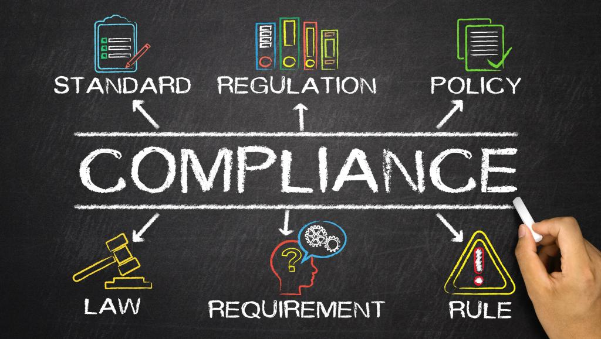

Tech-Enabled Compliance
Staying Ahead of Regulations in Transportation
By Christopher Robison
2023-11-06

In the fast-paced world of transportation, staying compliant with the latest regulations is not just a matter of legal necessity but also a competitive advantage. For small transportation businesses, where resources are often limited, keeping up with these changes can be particularly challenging. However, technology offers a beacon of hope, providing tools that can simplify, streamline, and automate the process of regulatory compliance.
Understanding the Compliance Challenge
Transportation is one of the most heavily regulated industries, with rules covering everything from vehicle maintenance and emissions to driver working hours and load restrictions. These regulations are constantly evolving to reflect new safety findings, environmental concerns, and technological advancements. For small businesses, the administrative burden of tracking and implementing these changes can be overwhelming.
The Role of Technology in Compliance
Fortunately, technology has kept pace with regulatory complexity, offering a suite of solutions that can help small transportation businesses stay compliant without getting bogged down in paperwork.
Electronic Logging Devices (ELDs): ELDs have revolutionized how drive time is recorded. Mandated by law, these devices ensure that drivers adhere to hours-of-service regulations, reducing the risk of fatigue-related incidents. They automatically track driving time, providing a foolproof log that helps businesses avoid costly violations.
Fleet Management Software: This software goes beyond tracking; it integrates various compliance-related tasks into one platform. From scheduling regular vehicle maintenance to ensuring that each load meets weight regulations, fleet management systems can alert you to potential compliance issues before they become a problem.
GPS Tracking: GPS technology helps with more than just navigation. It can ensure that vehicles are using approved routes and avoiding restricted areas. In the event of an audit or investigation, GPS data can provide the evidence needed to demonstrate compliance.
Automated Reporting Tools: Many regulatory bodies require detailed reports on different aspects of transportation operations. Automated reporting tools can compile necessary data and generate these reports, ensuring accuracy and saving time.
Training Platforms: Keeping drivers and staff updated on the latest regulations is crucial. Online training platforms can disseminate new information quickly and ensure that all team members complete the necessary training to stay compliant.
Data Analytics: Advanced data analytics can predict where compliance issues are likely to arise, allowing businesses to take proactive measures. This predictive approach can be particularly effective in managing the risks associated with regulatory changes.
Staying Proactive with Compliance Technology
The key to compliance is not just having the right technology but using it proactively. Small transportation businesses must stay informed about upcoming regulatory changes and update their systems accordingly. They should also invest in training to ensure that all employees know how to use compliance technologies effectively.
The Bottom Line
In an industry where non-compliance can result in hefty fines, lost business, and even legal action, investing in compliance technology is not an option—it’s a necessity. By leveraging the power of tech, small transportation businesses can not only stay ahead of regulations but also operate more safely, efficiently, and competitively.
For small transportation businesses, the road to compliance is increasingly paved with technology. By embracing these tools, they can ensure that they not only meet the current standards but are also ready to adapt to the future’s regulatory landscape.